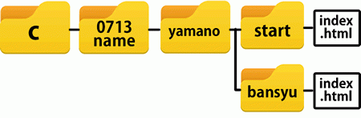
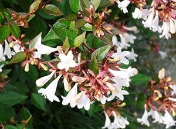
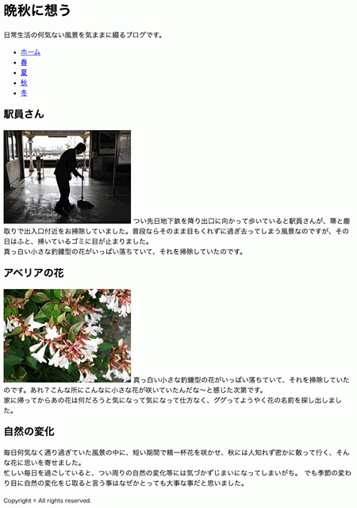
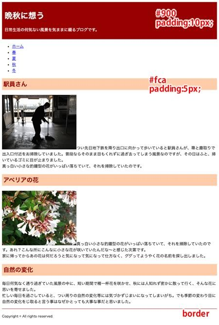
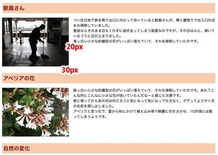
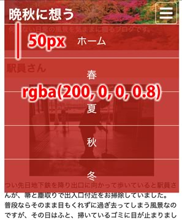

コーディング演習（晩秋）
フォルダー構成

使用テキスト
晩秋に想う
何気ない日常の風景を気ままに綴るブログです。
ホーム
春
夏
秋
冬
駅員さん
駅員さんの画像
つい先日地下鉄を降り出口に向かって歩いていると駅員さんが、箒と塵取りで出入口付近をお掃除していました。普段ならそのまま目もくれずに過ぎ去ってしまう風景なのですが、その日はふと、掃いているゴミに目が止まりました。
真っ白い小さな釣鐘型の花がいっぱい落ちていて、それを掃除していたのです。
アベリアの花
アベリアの花の画像
真っ白い小さな釣鐘型の花がいっぱい落ちていて、それを掃除していたのです。あれ？こんな所にこんなに小さな花が咲いていたんだな～と感じた次第です。
家に帰ってからあの花は何だろうと気になって気になって仕方なく、ググってようやく花の名前を探し出しました。
アベリアと言う花で、夏から秋にかけて植え込み等で綺麗に花をさかせ、10月頃には散ってしまうようです。
自然の変化
毎日何気なく通り過ぎていた風景の中に、短い期間で精一杯花を咲かせ、秋には人知れず密かに散って行く、そんな花に思いを寄せました。
忙しい毎日を過ごしていると、つい周りの自然の変化等には気づかずじまいになってしまいがち。
でも季節の変わり目に自然の変化を感じ取ると言う事はなぜかとっても大事な事だと思いました。
Copyright コピーライトマーク All rights reserved.
使用画像

完成イメージ

css設定

html
- <!DOCTYPE html>
- <html lang="ja">
- <head>
- <meta charset="utf-8">
- <title>晩秋に想う</title>
- <meta name="decription" content="何気ない日常の風景を気ままに綴るブログです。">
- <meta name="viewport" content="width=device-width,initial-scale=1">
- <link rel="stylesheet" href="css/style.css">
-
- </head>
- <body>
-
- <div>
-
- <!-- Header -->
- <header>
- <h1>晩秋に想う</h1>
- <p>何気ない日常の風景を気ままに綴るブログです。</p>
- </header>
-
- <!-- Navigation -->
- <nav>
- <ul>
- <li><a href="#">ホーム</a></li>
- <li><a href="#">春</a></li>
- <li><a href="#">夏</a></li>
- <li><a href="#">秋</a></li>
- <li><a href="#">冬</a></li>
- </ul>
- </nav>
-
- <!-- Main content -->
- <main>
-
- <!-- Content1 -->
- <h2>駅員さん</h2>
- <p><img src="img/ekiin.jpg" alt="掃除をしている駅員さんの画像">つい先日地下鉄を降り出口に向かって歩いていると駅員さんが、箒と塵取りで出入口付近をお掃除していました。<br>
- 普段ならそのまま目もくれずに過ぎ去ってしまう風景なのですが、その日はふと、掃いているゴミに目が止まりました。<br>
- 真っ白い小さな釣鐘型の花がいっぱい落ちていて、それを掃除していたのです。</p>
- <!-- Content2 -->
- <h2>アベリアの花</h2>
- <p><img src="img/aberia.jpg" alt="アベリアの花の画像">真っ白い小さな釣鐘型の花がいっぱい落ちていて、それを掃除していたのです。あれ？こんな所にこんなに小さな花が咲いていたんだな〜と感じた次第です。<br>
- 家に帰ってからあの花は何だろうと気になって気になって仕方なく、ググってようやく花の名前を探し出しました。<br>
- アベリアと言う花で、夏から秋にかけて植え込み等で綺麗に花をさかせ、10月頃には散ってしまうようです。</p>
- <!-- Content3 -->
- <h2>自然の変化</h2>
- <p>毎日何気なく通り過ぎていた風景の中に、短い期間で精一杯花を咲かせ、秋には人知れず密かに散って行く、そんな花に思いを寄せました。<br>
- 忙しい毎日を過ごしていると、つい周りの自然の変化等には気づかずじまいになってしまいがち。<br>
- でも季節の変わり目に自然の変化を感じ取ると言う事はなぜかとっても大事な事だと思いました。</p>
-
- </main>
-
- <!-- Footer -->
- <footer>
- <p><small>Copyright © All rights reserved.</small></p>
- </footer>
-
- </div>
-
- </body>
- </html>
css
- @charset "utf-8";
-
- div{
- max-width:960px;
- margin:0 auto;
- }
-
- /* ヘッダー */
- header{
- color: #fff;
- padding: 10px;
- background:url(../img/header.jpg) no-repeat;
- height: 130px;
- }
-
- /* Navigation */
- nav ul{
- padding: 0;
- list-style: none;
- display: flex;
- }
- nav li{
- text-align: center;
- width: 20%;
- }
- nav a{
- text-decoration: none;
- color: #fff;
- background-color: #900;
- display: block;
- padding: 15px 0;
- }
- nav a:hover{
- color: #900;
- background-color: #fca;
- }
-
- /* h2見出し */
- h2{
- background: #fca;
- color: #900;
- padding: 5px;
- clear: both;
- }
- /* 画像フロート */
- main img{
- float: left;
- margin: 0 20px 30px 0;
- }
-
- /* Footer上境界線 */
- footer{
- border-top: 1px solid #900;
- }
-
- @media screen and (max-width:767px) {
-
- /* ヘッダー */
- header{
- height: 100px;
- background-size:cover ;
- }
- h1,header p{
- margin: 0;
- }
-
- /* Navigation */
- nav ul{
- display:block ;
- }
- nav li{
- width: auto;
- }
-
- /* 画像フロート */
- main img{
- float: none;
- display: block;
- margin: 0 auto 10px;
- }
-
- }
Navigation
ヘッダー背景画像指定
{kind=link}
画像フロート

Responisve
{kind=link}
Sp menu
